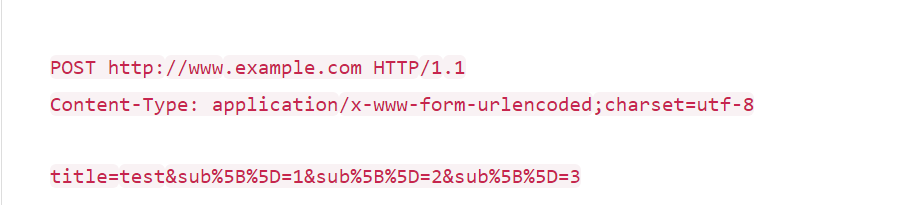

分享人：陈皓宇
目录
1.背景介绍
2.知识剖析
3.常见问题
4.解决方案
5.编码实战
6.扩展思考
7.参考文献
8.更多讨论
GET和POST是 HTTP协议中的两种发送请求的方法。
HTTP是hypertext transfer protocol（超文本传输协议）的简写， 它是TCP/IP协议的一个应用层协议，用于定义WEB浏览器与WEB服务器之间交换数据的过程。
客户端连上服务器后，向服务器请求某个web资源，称之为客户端向服务器发送了一个HTTP请求。 一个完整的HTTP请求包括如下内容：一个请求行、若干消息头、以及实体内容
请求方式有：POST、GET、HEAD、OPTIONS、DELETE、TRACE、PUT，常用的有： GET、 POST
邓哥家住在吃鸡村，邓嫂家住在农药屯。邓哥到邓嫂家可以有很多种选择，走着去、驾车去、坐火车去等等。邓哥通常选择驾车过去。
这里吃鸡村和农药屯就相当于是互联网中的两台计算机，邓哥和邓嫂相当于是这两台计算机中的两个程序，这两个程序之间想要通信可以有很多种协议，就好比有很多种交通方式可以到达。我们假设驾车这种方式就是网络中的HTTP协议。
邓哥家有两辆车，一辆轿车，一辆箱式货车。
两种车就好比是HTTP协议中的两种方式，我们假设轿车是GET请求方式，箱式货车是POST请求方式。
有一天邓哥想接邓嫂来吃鸡村玩，邓哥准备开箱式货车去接邓嫂。
邓哥要去接邓嫂，就好比程序A要向程序B发出一个请求。从原理上说，无论是轿车还是货车都是车，都能够把人接回来。所以在本质上，GET请求和POST请求都能拉取数据。
这时候，邓哥的父亲（也就是隔壁老王）出来了，说道：“你是不是傻，去接人开轿车多好啊，开货车干嘛？费油不说，没准人家那还不让货车停车呢！”
既然GET和POST都可以做到拉取数据，那么为什么我们通常拉取数据使用GET而不使用POST呢？
在故事中，隔壁老王不让邓哥开卡车去接邓嫂，那么在现实中，是不是也有一个“隔壁老王”这样的角色在限制我们呢？
答案是：有的！这个现实中的“隔壁老王”就是ISO国际标准化组织，这个组织也说了一堆类似隔壁老王的话，这堆话被称为RFC规范。
所以说，我们常说的HTTP协议实际上是基于RFC规范的，实际上GET和POST请求的语法是完全相同的，但是在RFC规范中，给GET请求和POST请求规定了语义，规定GET用来获取信息，POST用来发送信息。
当过年的时候，邓哥想要给邓嫂家送一些年货的时候，邓哥按照隔壁老王的嘱咐，开着货车给邓嫂家送年货去了。当然，送过去了一些蔬菜也会稍微拉回来一点水果~
这就是按照RFC的规范来执行的，当邓哥想要送年货的时候，就会开货车过去；在互联网环境中，如果想要发送信息就要使用POST方法。
POST方法虽然是发送消息的，但也是有Response的，在请求返回的时候带回来一点数据也是被允许的。
那么这时候问题又来了，邓哥如果不听老王的怎么办？那这个规范不就没有作用了吗？
这个时候老王也是很有办法的，老王就坐在院子门口，如果邓哥想运货出去的时候，开的不是货车就不让出院门~
光有规范没有具体的软件实施也是没有意义的，所以很多的软件遵从了RFC的规范，比如我们熟悉的Chrome浏览器。
所以我们想用GET方式发送文件或者图片是不可能的~就像邓哥不可能用轿车去给邓嫂送年货一样。
如果什么前提都没有，也就是不用任何规范限制的话，我们只考虑语法来说，这两个方式是没有任何区别的，只有名字不一样。
如果考虑浏览器实现的RFC，或者说Web环境下的RFC的话，那么区别就很明显了。
get: 从服务器上获取数据,将表单中数据的按照variable=value的形式，添加到action所指向的URL后面，并且两者使用“?”连接， 而各个变量之间使用“&”连接。
post: 向服务器传送数据,将表单中的数据放在form的数据体中，按照变量和值相对应的方式，传递到action所指向URL。
get 和 post只是一种传递数据的方式，get也可以把数据传到服务器，他们的本质都是发送请求和接收结果。只是组织格式和数据量上面有差别。
GET 1.GET是通过URL提交数据，因此GET可提交的数据量就跟URL所能达到的最大长度有直接关系。 2.实际上HTTP协议对URL长度是没有限制的；限制URL长度大多数是浏览器或者服务器的配置参数。 POST 1.同样的，HTTP协议没有对POST进行任何限制，一般是受服务器配置限制或者内存大小。 2.PHP下可以修改php.conf的postmaxsize来设置POST的大小。
1.GET是通过URL方式请求，可以直接看到，明文传输。 2.POST是通过请求header请求，可以开发者工具或者抓包可以看到，同样也是明文的。 3.GET请求会保存在浏览器历史纪录中，还可能会保存在Web的日志中。
tip: 所以，发送用户名、密码，一定不能用GET,请用POST
幂等是指同一个请求方法执行多次和仅执行一次的效果完全相同。 1.按照RFC规范，PUT，DELETE和安全方法都是幂等的。虽说是规范，但服务端实现是否幂等是无法确保的。 2.引入幂等主要是为了处理同一个请求重复发送的情况，比如在请求响应前失去连接，如果方法是幂等的，就可以放心地重发一次请求。 这也是浏览器在后退/刷新时遇到POST会给用户提示的原因： POST语义不是幂等的，重复请求可能会带来意想不到的后果。
协议规定 POST 提交的数据必须放在消息主体（entity-body）中，但协议并没有规定数据必须使用什么编码方式。 实际上，我们完全可以自己决定消息主体的格式，只要最后发送的 HTTP 请求满足上面的格式就可以。
Content-Type的类型有很多种：可以参考对照表。
这里常用的两种类型：application/x-www-form-urlencoded 和 application/json
这应该是最常见的 POST 提交数据的方式了。浏览器的原生 form 表单，如果不设置 enctype 属性， 那么最终就会以 application/x-www-form-urlencoded 方式提交数据。请求类似于下面这样 
application/json 这个 Content-Type 作为响应头大家肯定不陌生。
实际上，现在越来越多的人把它作为请求头，用来告诉服务端消息主体是序列化后的 JSON 字符串。
由于 JSON 规范的流行，除了低版本 IE 之外的各大浏览器都原生支持 JSON.stringify，
服务端语言也都有处理 JSON 的函数，使用 JSON 不会遇上什么麻烦。
JSON 格式支持比键值对复杂得多的结构化数据，这一点也很有用。
Google 的 AngularJS 中的 Ajax 功能，默认就是提交 JSON 字符串。
参考一:get和post区别？—— 知乎
put 和 delete 请求
PUT：上传指定的 URI 表示。
DELETE：删除指定资源。
PUT，DELETE操作是幂等的。
感谢大家观看
BY : 陈皓宇|张乾